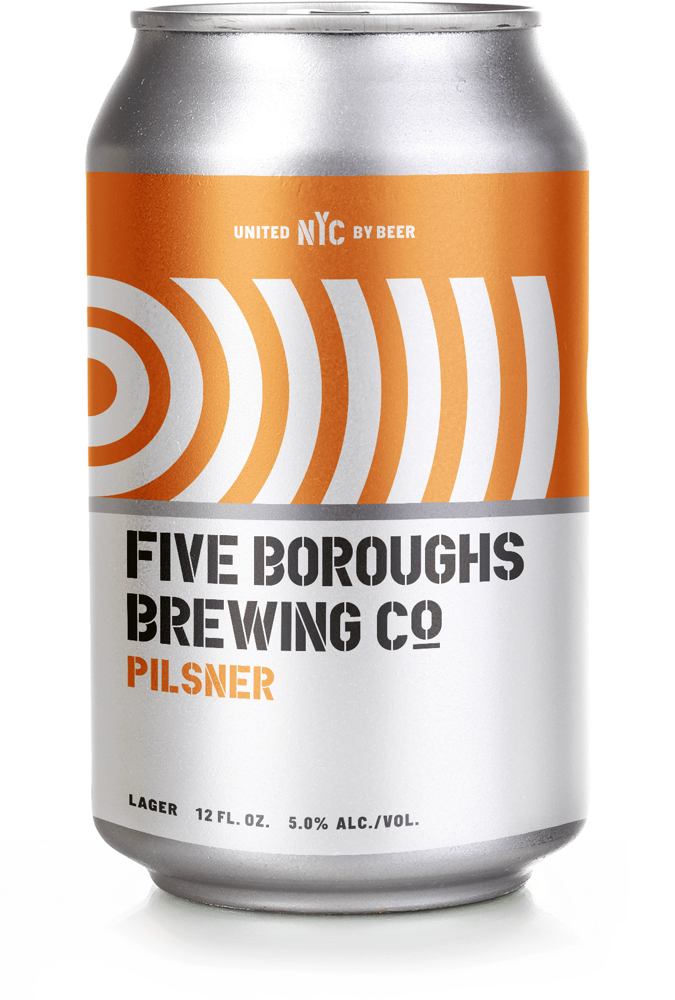
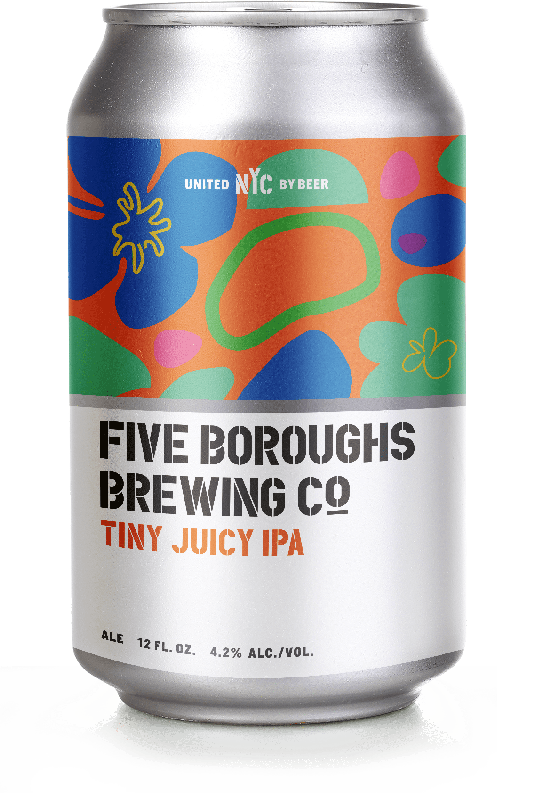
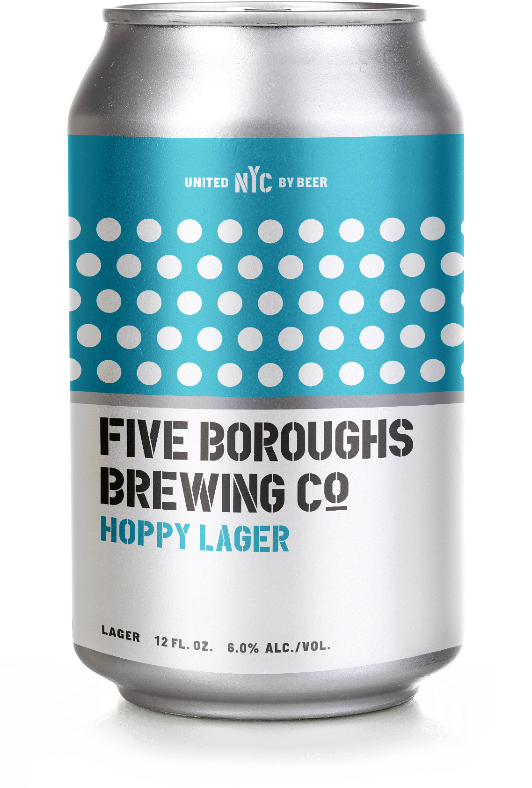
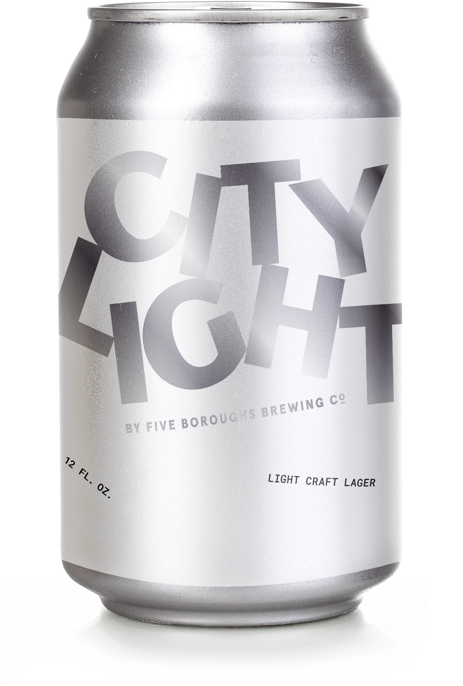
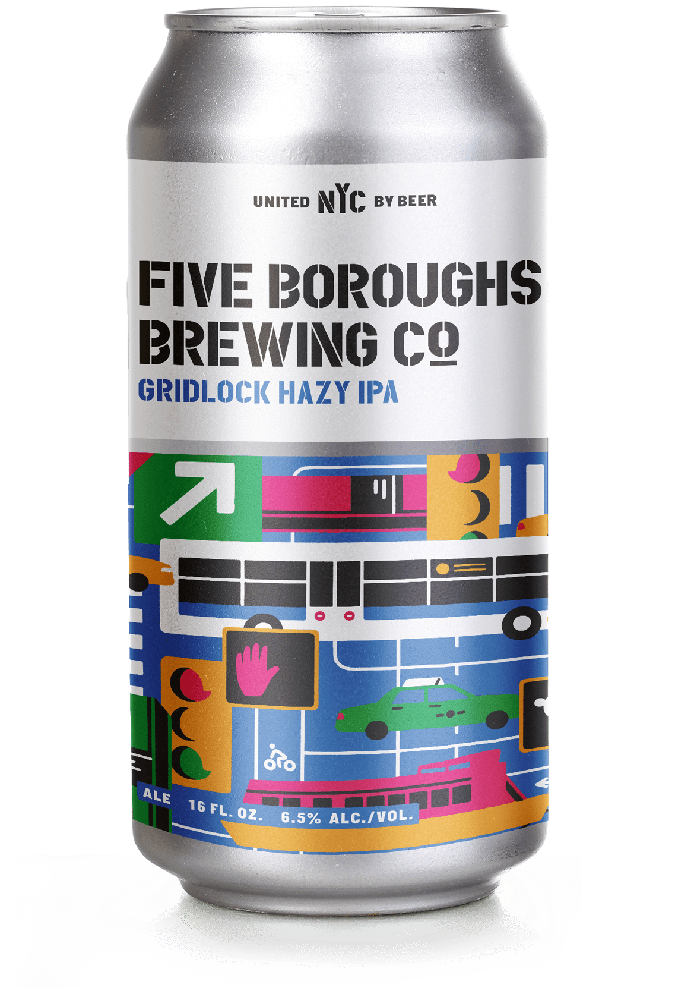

Five Boroughs Brewing Co.
Makes craft beer that brings New York City together.
Are you over 21?
YES
NO
You must be of legal drinking age to join us.
The beers below are available year-round! We also offer seasonal and specialty brews in our Sunset Park taproom and at select other locations. Visit our Taproom page to view our current beer menu and keep an eye on our social media pages for information about new releases.
Pilsner
Tiny Juicy IPA
Hoppy Lager
City Light
Gridlock Hazy IPA
IPA
Gose
Core—Year-Round (Cans & Draft)
Pilsner
Light and deceptively delicious. Saaz hops impart soft, floral, and grassy aromas, complemented by a clean, bitter finish.
Malt
Bohemian Pilsner
HOPS
Saaz
ABV 5%
IBU 40
SRM 3

Core—Year-Round (Cans & Draft)
Tiny Juicy IPA
Mosaic, Simcoe, and Cascade pack a fruity & piney punch, balanced by an abundant base of flaked oats. Juicy and exceedingly drinkable.
Malt
2-ROW, WHEAT, Flaked Oats
HOPS
Mosaic, Simcoe, Cascade
ABV 4.2%
IBU 45
SRM 2

Core—Year-Round (Cans & Draft)
Hoppy Lager
An untraditional take on a traditional brew. Tropical fruit, lime zest, grapefruit, and light pine derive from large Motueka & Centennial hop additions.
Malt
2-ROW, WHEAT MALT
HOPS
Motueka, Centennial, Horizon
ABV 6.0%
IBU 45
SRM 3

Core—Year-Round (Cans & Draft)
City Light
An unfiltered light lager made with Saaz hops, premium German malts, and NYC water. A serious beer that’s also seriously sessionable.
Malt
Bohemian Pilsner
HOPS
Saaz
ABV 4.2%
IBU 20
SRM 2

Core—Year-Round (Cans & Draft)
Gridlock Hazy IPA
Hazy IPA offering a tropical traffic jam of flavor. Flaked oats balance heavy Amarillo and Citra hop additions — bumper-to-bumper deliciousness.
Malt
Bohemian Pilsner, Pale Wheat Malt, Flaked Oats, Carahell
HOPS
Amarillo, Citra
ABV 6.5%
IBU 45
SRM 3

Core—Year-Round (Draft-Only)
IPA
A modern take on the OG West Coast IPA. Huge citrus fruit flavor is balanced by piney, herbaceous bitterness.
Malt
2-Row, Maris Otter, Wheat Malt, 10L
HOPS
Citra, CTZ, Centennial, Cascade, Chinook, Horizon
ABV 6.8%
IBU 62
SRM 4
Core—Year-Round (Draft-Only)
Gose
Acidic sourness & saltiness are in harmony. Incredibly drinkable, clean finish, little to no bitterness.